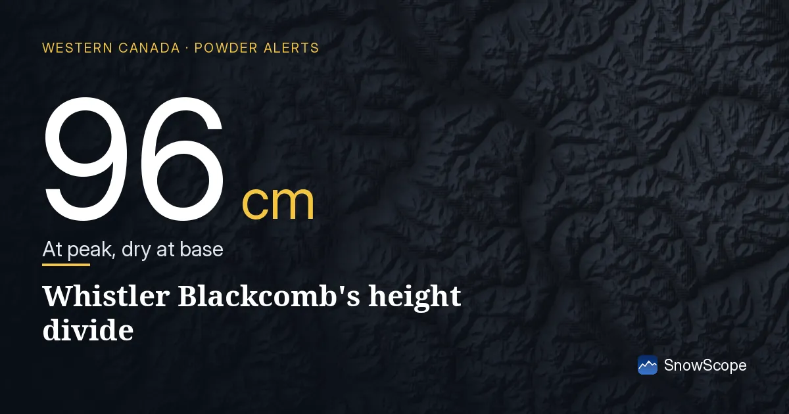
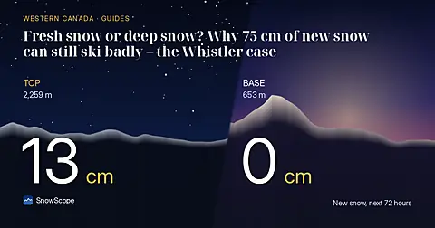

Whistler Blackcomb's height divide: 96 cm at peak, dry at base
Whistler Blackcomb led Western Canada with 100 cm of fresh snow in the last three days through 8 November, but the depth varies sharply with height. The base remains dry while the summit holds 96 cm, and 62 cm more is forecast for the coming days.
See the live snow forecast for Whistler Blackcomb in the SnowScope appSnow depth, powder alerts and the 3D map, free.
Height divide
The 96 cm at Whistler's summit contrasts with what the model estimates at the base: 0 cm. From a water perspective, this height gap tells us that the freezing level on 8 November was low, somewhere between 940 and 1520 metres. Snow fell above this level; below it, rain or wet snow mixed in and did not accumulate. At the mid-slopes (1456 m), the model shows 62 cm of snow, confirming that the boundary lay well below the summit.
| Resort | Snow depth | New snow, 72 h | Coming, next days | Top |
|---|---|---|---|---|
| Whistler Blackcomb | 131 cm | 100 cm | 62 cm | 2,259 m |
| Ski Callaghan | 82 cm | 97 cm | 53 cm | 998 m |
| Tweedsmuir Ski Club | 56 cm | 59 cm | 39 cm | 1,650 m |
| Mount Cain Alpine Park | 95 cm | 50 cm | 21 cm | 1,616 m |
| Sasquatch | 28 cm | 20 cm | 4 cm | 1,316 m |

Which resorts got the most snow
Whistler Blackcomb received the most fresh snow in the region over 72 hours, with Ski Callaghan close behind at 97 cm on its upper slopes. Tweedsmuir Ski Club accumulated 59 cm, Mount Cain Alpine Park 50 cm, and Sasquatch 20 cm. The variation reflects not just the storm pattern but the freezing level at each site and how the mountains steer the air. In the region overall, 45 of 57 resorts now have some snow cover, confirming that snow is building across the range.

Why the base stayed dry
Whistler's base sits at 653 metres. On 8 November, the freezing level ranged from a low of 940 metres to a high of 1520 metres. For much of the day, the base lay below the freezing level, so precipitation fell as rain. As the day warmed, the freezing level rose, but by then the main snow had already moved up and over the mountain. This is typical early in the season: low freezing levels push fresh snow to high elevations, leaving the base and valley floors bare.
More snow is coming, but higher still
The forecast for the next three days brings 62 cm more snow to Whistler Blackcomb. On 9 November, the freezing level drops sharply to 680 metres, allowing snow to fall lower. But by 11 November, the freezing level climbs to 2170 metres on the low end and 2930 metres on the high end. That means the heaviest new snow (46 cm forecast for 11 November) will fall mostly above 2170 metres, adding to what is already the deepest part of the mountain.
Water storage in thin snow
From a water-supply view, most of the new snow sits in a narrow band high on the mountain. The mid-slopes hold about 62 cm and the summit 96 cm, both modest by mid-winter standards. The snowpack is thin early in the season, and rockbeds may protrude through it. As the season progresses and more snow lands, this will gradually fill the reservoir of water stored across the range. Rivers and downstream reservoirs depend on this accumulation; for now, the water is locked up high and scattered.
Practical snow notes
Whistler Blackcomb offers the best snow in Western Canada right now, but depth is concentrated above mid-elevation. The base and lower slopes remain thin to bare. Nearby Ski Callaghan has similar conditions, with 82 cm on upper slopes but only 3 cm modelled at the base. Before venturing into the backcountry or off-piste terrain, check the official avalanche forecast for the region. Early-season slopes are fast and reactive to new load.
Tips for skiers
- Ski high: most of the new snow is above 1456 metres. Lower slopes remain sparse and may have thin cover over rocks.
- Watch the freezing level: on 11 November it may rise above 2170 metres. Any precipitation that day could start as snow high and turn to rain lower down.
- Check the official avalanche bulletin before going off-piste: recent heavy falls have added new load to the mountain.
- Consider alternatives: Ski Callaghan has 97 cm in 72 hours if you want good snow near Whistler.
- Expect settling: thin early-season snow can compact quickly as more falls on top of it.
About these numbers
Resort snow depths are the deepest snow on the resort's upper slopes from the SnowScope snow model (about 1 km, run of 8 November); they are estimates for an area, not a measurement at one point. Station values are measurements on the date shown. Forecasts can change. Always read the official avalanche bulletin before going off-piste.
Official avalanche bulletins: Avalanche Canada
Cite this report
For research, teaching or the press: the numbers and charts are free to reuse under CC BY 4.0 with this citation.
SnowScope (2026), Whistler Blackcomb's height divide: 96 cm at peak, dry at base, https://snowscope.app/blog/en/2026/11/western-canada-whistler-blackcomb-fresh-snow-powder-alert-8-november-2026.html, accessed 2026-11-08
SnowScope (Atlas Labs). (2026, November 8). Whistler Blackcomb's height divide: 96 cm at peak, dry at base. SnowScope snow reports. https://snowscope.app/blog/en/2026/11/western-canada-whistler-blackcomb-fresh-snow-powder-alert-8-november-2026.html
BibTeX
@misc{snowscope2026westerncanadawhistlerbla,
author = {{SnowScope (Atlas Labs)}},
title = {Whistler Blackcomb's height divide: 96 cm at peak, dry at base},
year = {2026},
month = nov,
howpublished = {\url{https://snowscope.app/blog/en/2026/11/western-canada-whistler-blackcomb-fresh-snow-powder-alert-8-november-2026.html}},
note = {Published 2026-11-08 20:08 UTC; accessed 2026-11-08}
}· CC BY 4.0 · Methods, data and tools →
Whistler Blackcomb: snow and temperature by height, this winter vs last (tools) →
Follow Whistler Blackcomb
Free: a message when fresh snow is coming, and the forecast every morning.
More snow reports

Whistler Blackcomb got 75 cm of new snow at the top in a week, then a warm storm with 124 mm of water. A simple guide to base, fresh snow, rain and crust.

Whistler Blackcomb forecast to gain 47 centimetres by Saturday as snow arrives Thursday through the region, according to our model run on 4 November.

Whistler Blackcomb saw 76 cm of new snow in the last 72 hours, with Mount Cain Alpine Park also receiving 64 cm, as of November 16, 2026.